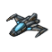

L-Cluster
Version
This article is for the PC version of Stellaris only.
| |
Available only with the Distant Stars DLC enabled. |
The L-Cluster is a cluster of stars located north-east of the galaxy and entirely inaccessible through the regular hyperlane network, experimental subspace navigation, or jump drives. Some Celestial objects in the L-Cluster contain a unique Strategic Resource:  Nanites. If a ringworld is built inside the L-Cluster, the uninhabitable sections may gain
Nanites. If a ringworld is built inside the L-Cluster, the uninhabitable sections may gain  Nanites deposits.
Nanites deposits.
What else will be found in the L-Cluster is randomized at the start of the game; as such, reloading a previous save before accessing will not alter the result. The L-Cluster can be enabled or disabled in the galaxy settings.
L-Gates
Some Black Hole systems are home to  L-Gates; these heavily modified gateways cannot be activated with the
L-Gates; these heavily modified gateways cannot be activated with the  Gateway Activation technology. Upon first encountering one, the L-Cluster entry will be added to the Situation Log, requiring the collection of 7 L-Gate Insights. Insights can be obtained by investigating certain anomalies, defeating certain enemies, researching the L-Gate Insight repeatable technology, asking the Curator Order for an insight every decade (at the cost of
Gateway Activation technology. Upon first encountering one, the L-Cluster entry will be added to the Situation Log, requiring the collection of 7 L-Gate Insights. Insights can be obtained by investigating certain anomalies, defeating certain enemies, researching the L-Gate Insight repeatable technology, asking the Curator Order for an insight every decade (at the cost of  −5000 Energy) or, if
−5000 Energy) or, if  Ancient Relics is enabled, spending
Ancient Relics is enabled, spending  1000 Minor Artifacts to discover an L-Gate Insight with a cooldown of 10 years. Once an empire acquires 5 L-Gate Insights, all other empires will be notified.
1000 Minor Artifacts to discover an L-Gate Insight with a cooldown of 10 years. Once an empire acquires 5 L-Gate Insights, all other empires will be notified.
Once 7 L-Gate Insights have been collected, the L-Gate Activation technology will become available for research. Additionally, the empire will have to own a system with an L-Gate so that a special project will be added to activate the L-Gate, taking 180 days for a science ship to open the gate. If an empire owns more than one system with an L-Gate, one will be randomly selected as the target of the project.
Up to 10 L-Gates can exist in a galaxy – scaled by galaxy size, and new ones cannot be constructed. Only one L-Gate is located in the L-Cluster, in the Terminal Egress system; all L-Gates in the galaxy connect to the same L-Gate in Terminal Egress, and the Terminal Egress L-Gate can be used to travel to any other L-Gate in the galaxy. Unlike regular gateways, L-Gates in enemy systems can be used during war.
Completed Sentry Arrays will not grant visibility of the L-Cluster before an L-Gate is activated. After L-Gate activation, it will grant visibility of the L-Cluster.
|
|
Available only with the Overlord DLC enabled. |
A Quantum Catapult will be able to catapult fleets to the L-Cluster after L-Gate activation, provided systems of the L-Cluster are in its range.
Outcomes
Aside from the systems and resources inside, the L-Cluster contains a swarm of nanites. As time passed, it decided to take various forms and its intentions changed. Once the first  L-Gate is activated, the swarm will be found in one of the following forms:
L-Gate is activated, the swarm will be found in one of the following forms:
| Form | Chance (civilian difficulty) | Chance (other difficulties) | Opens all L-gates immediately | Allows terraforming Nanite Worlds |
|---|---|---|---|---|
| Dessanu Consonance | 33% | 21.4 % | ||
| L-Drakes | 33% | 21.4 % | ||
| Gray | 33% | 21.4 % | ||
| Gray Tempest | 0% | 35.8 % |
Once an empire accesses the L-Cluster, other empires that have L-Gate Insights will receive 500  Energy and
Energy and  Engineering Research for each one.
Engineering Research for each one.
Gray Tempest

{kind=link}
The first outcome from a chronological perspective, as well as the most common outcome of the  L-Gate activation if the game is not played on Civilian difficulty, is an invasion from the L-Cluster. All L-Gates in the galaxy except the first one activated will open at the same time and bring an invasion force. In a tiny galaxy with only one L-Gate, the empire that activated it will endure the invasion instead. Each Gray Tempest fleet is made up of 3 Interdictors and if game difficulty is Captain or above it will also include a Mothership.
L-Gate activation if the game is not played on Civilian difficulty, is an invasion from the L-Cluster. All L-Gates in the galaxy except the first one activated will open at the same time and bring an invasion force. In a tiny galaxy with only one L-Gate, the empire that activated it will endure the invasion instead. Each Gray Tempest fleet is made up of 3 Interdictors and if game difficulty is Captain or above it will also include a Mothership.
If a Gray Tempest fleet bombards a colony until it reaches  100 devastation, the colony will turn into a
100 devastation, the colony will turn into a  Nanite World. If the colony is a
Nanite World. If the colony is a  habitat or a
habitat or a  ring world segment, it will be ruined instead.
ring world segment, it will be ruined instead.
The factory in the Gray Tempest home system will create reinforcements every 10 years. If any other empire has a ship in the L-Cluster, three new fleets will spawn at the factory. Otherwise, a single fleet will spawn at the L-Gate in Terminal Egress. If the factory is destroyed, all Gray Tempest ships will dissolve and all Nanite Worlds will get the 
 Terraforming Candidate planet modifier.
Terraforming Candidate planet modifier.
L-Drakes
In this outcome, the nanite swarm tries to pretend they are spaceborne leviathans. Each  L-Gate in the galaxy will activate and bring an L-Drake, which will travel to a random system three hyperlanes away and nest there. It will not be hostile even if its nesting system is claimed. If an L-Drake is attacked, all L-Drakes will become hostile towards the attacking empire, but each L-Drake killed adds a moderate reward of
L-Gate in the galaxy will activate and bring an L-Drake, which will travel to a random system three hyperlanes away and nest there. It will not be hostile even if its nesting system is claimed. If an L-Drake is attacked, all L-Drakes will become hostile towards the attacking empire, but each L-Drake killed adds a moderate reward of  Influence and
Influence and  Minerals. If the empire that opened the L-Gate does this, it will also gain moderate
Minerals. If the empire that opened the L-Gate does this, it will also gain moderate  Engineering and
Engineering and  Society research for each killed L-Drake. L-Drakes fight identically to the Young Drake from the
Society research for each killed L-Drake. L-Drakes fight identically to the Young Drake from the  Leviathans DLC.
Leviathans DLC.
If an empire enters a L-Drake nesting system with a science ship, it will have the option to start a special project to tame the L-Drake residing there, gaining control of it. This option is not available if the empire is  Fanatic Xenophobe or Genocidal.
Fanatic Xenophobe or Genocidal.
This outcome leaves all L-Gates activated and leading to an abandoned L-Cluster, allowing everyone access.
The empire that initially opened the L-Gates will not have an L-Drake enter their space.
Dessanu Consonance
In this outcome, the nanite swarm tries to emulate and pretend it is its creator empire and keep its true nature a secret. The L-Cluster will be inhabited by an empire called the Dessanu Consonance. Upon discovery, they will provide the empire that opened the gate +1  Living Metal,
Living Metal,  Exotic Gases,
Exotic Gases,  Rare Crystals, and
Rare Crystals, and  Volatile Motes, as well as the
Volatile Motes, as well as the  Living Metal technology if it hasn't been already researched. Their only request is that no ship will enter the factory trinary system at the heart of the L-Cluster and that they are not asked about the nanites. The Dessanu will never leave the L-Cluster even if they become hostile, nor will they build new fleets.
Living Metal technology if it hasn't been already researched. Their only request is that no ship will enter the factory trinary system at the heart of the L-Cluster and that they are not asked about the nanites. The Dessanu will never leave the L-Cluster even if they become hostile, nor will they build new fleets.
Each time a ship or fleet enters the factory system, the Dessanu will demand that it leaves within 60 days. Refusing to do so or inquiring too much about nanites will make them hostile, as will attacking them. If the Dessanu Consonance becomes hostile the strategic resources income from them will be removed.
Each Dessanu system contains at least one  Gaia World. However, if a planet is successfully invaded and occupied, it will turn into a Nanite World with the Terraforming Candidate planet modifier. All armies will safely retreat back in orbit. If the factory is destroyed, the same will happen to all Dessanu worlds.
Gaia World. However, if a planet is successfully invaded and occupied, it will turn into a Nanite World with the Terraforming Candidate planet modifier. All armies will safely retreat back in orbit. If the factory is destroyed, the same will happen to all Dessanu worlds.
Gray
The last outcome from a chronological perspective, the nanite swarm merged into a single entity and is unsure what to do. When entered, the L-Cluster will be found abandoned. A random Nanite World will have a Level 3 Surface Signature anomaly (though this anomaly is very likely to be detected, it is not guaranteed to appear). Investigating it will reveal a nanite entity taking the form of a member of the species discovering it and explaining the history of the previous outcomes. Asking Gray to join you will add it to the Contacts menu. Gray can take one of three forms at any time (except if it is in battle or merging state):
- Legendary paragon Gray
- Nanite Warform army (around 1k army strength)
- Nanite Titan with the following components
| Section | Components |
|---|---|
| Core |       
|
| Weapons |      
|
| Utility |      
|
Should Gray be destroyed, it will merge back and reappear in 10 years.
This outcome leaves only one  L-Gate activated, all the others coming online afterwards one at a time every one or two years. This gives the empire that activated the first L-Gate a significant head start. Players will be unable to terraform Nanite Worlds in this outcome.
L-Gate activated, all the others coming online afterwards one at a time every one or two years. This gives the empire that activated the first L-Gate a significant head start. Players will be unable to terraform Nanite Worlds in this outcome.
Nanite fleets
The Dessanu Consonance and Gray Tempest fleets are composed of one Titan Nanite Mothership and five Nanite Interdictors, all equipped with  Guided Energy weapons and
Guided Energy weapons and  Nanite Fighter strike craft.
Nanite Fighter strike craft.
Their energy weapons deal −25% damage to shields and double damage to armor; their strike craft ignore shields and 66% of armor; and their Titan weapons ignore all shields and armor. Therefore  point-defenses are necessary, preferably Flak Artillery, and
point-defenses are necessary, preferably Flak Artillery, and  Crystal-Infused Plating or
Crystal-Infused Plating or  Crystal-Forged Plating components and to a lesser extent shields are required.
Crystal-Forged Plating components and to a lesser extent shields are required.
Nanite ships have equal amounts of Tier V armor and shields, and their special strike craft cannot do point defense, so the best offensive weapon would be  Torpedoes. Due to the huge number of strike craft that Nanite Motherships carry, your own strike craft are more useful at fleet defense than offense. The Interdictors are five times more powerful than the ones available to regular Nanotech empires and make use of utility components.
Torpedoes. Due to the huge number of strike craft that Nanite Motherships carry, your own strike craft are more useful at fleet defense than offense. The Interdictors are five times more powerful than the ones available to regular Nanotech empires and make use of utility components.
Their home system contains a factory station twice as strong as the usual fleet as well as four regular Nanite fleets. Every other system will contain one defensive fleet for each Nanite world it has, and there are a further seven roaming fleets which patrol randomly between the Nanite worlds in the L-Cluster. Their fleetpower scales with the Crisis slider.
| Ship | Total stats | Weapons | Utilities | Core components |
|---|---|---|---|---|
| Nanite Factory |
|
 Nanite Fighters
|
||
| Nanite Mothership |
|
|
||
| Nanite Interdictor |
|
|
{kind=link}
{kind=link}
{kind=link}
Technical information
A global flag set at galaxy generation determines the outcome of activating  L-Gates, so reloading a save file won't change the result. This flag can be seen by using the Console to execute the following script.
L-Gates, so reloading a save file won't change the result. This flag can be seen by using the Console to execute the following script.
effect switch = { trigger = has_global_flag
gray_goo_crisis_set = { custom_tooltip = "Gray Tempest"}
dragon_season = { custom_tooltip = "L-Drake" }
gray_goo_empire_set = { custom_tooltip = "Dessanu Consonance" }
default = { custom_tooltip = "Gray" }
}
| Exploration | Exploration • FTL • Unique systems • L-Cluster • Pre-FTL species • Fallen empire • Spaceborne aliens • Enclaves • Guardians • Marauders • Caravaneers |
| Celestial bodies | Celestial body • Colonization • Planetary features • Planet modifiers |
| Discovery | Discovery • Anomaly • Archaeological site • Astral rift • Relics • Collection |
| Species | Species • Pop modification • Biological traits • Machine traits • Population • Species rights • Ethics |
| Leaders | Leader • Common leader traits • Commander traits • Official traits • Scientist traits • Paragons |
| Governance | Empire • Origin • Government • Civics • Council • Policies • Edicts • Factions • Traditions • Ascension perks • Ambition • Situations |
| Economy | Resources • Planetary management • Districts • Jobs • Designation • Trade • Megastructures • Waystation |
| Buildings | Planet capital • Common buildings • Planet unique • Empire unique • Holdings |
| Ships | Ship • Arkship • Ship designer • Core components • Weapon components • Utility components • Mutations • Offensive mutations |
| Technology | Technology • Physics research • Society research • Engineering research |
| Diplomacy | Diplomacy • Relations • Galactic community • Federations • Subject empires • Intelligence • Contracts • AI personalities |
| Warfare | Warfare • Space warfare • Land warfare • Starbase • Crisis |
| Others | Events • The Shroud • Preset empires • AI players • Stat modifiers • Console commands • Easter eggs |